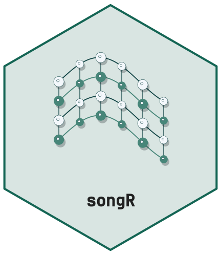
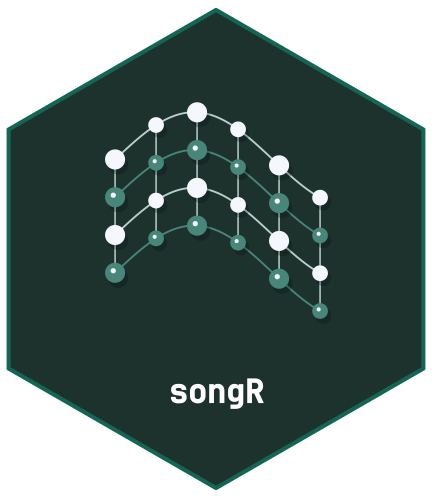
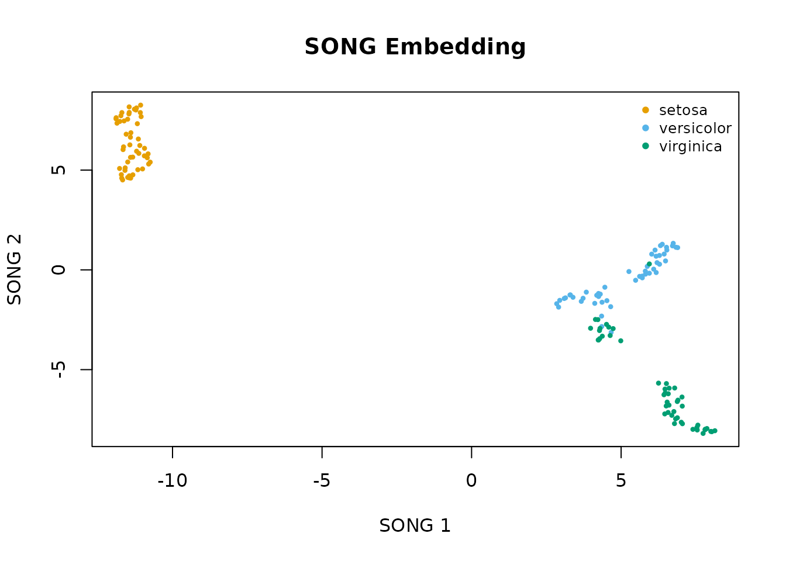
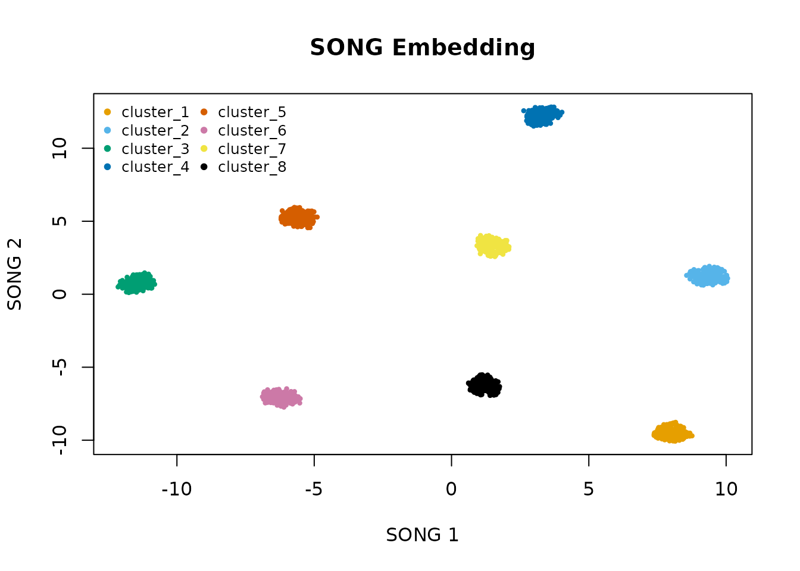
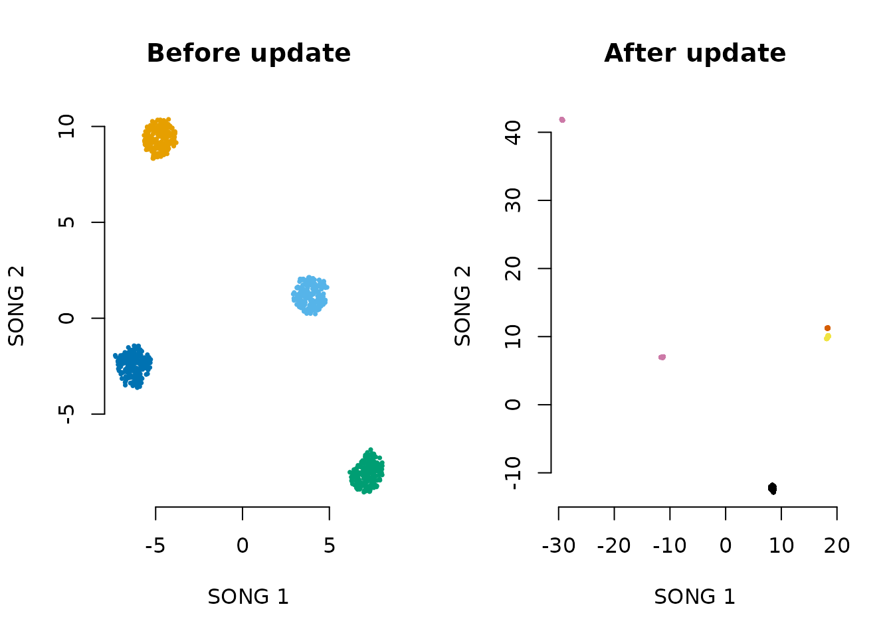
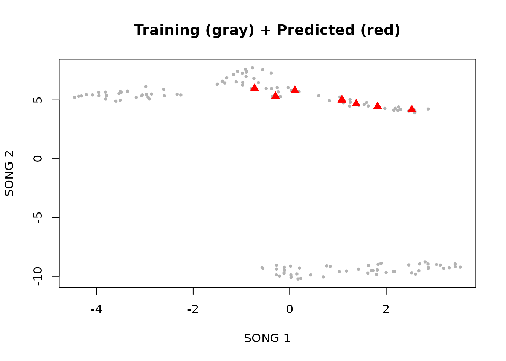
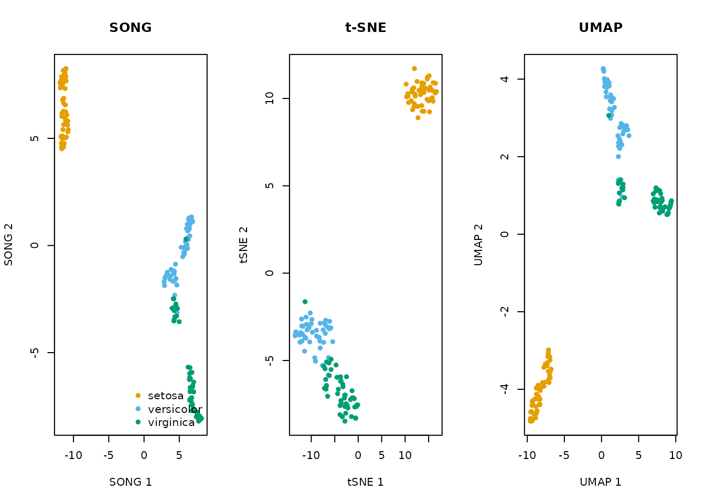
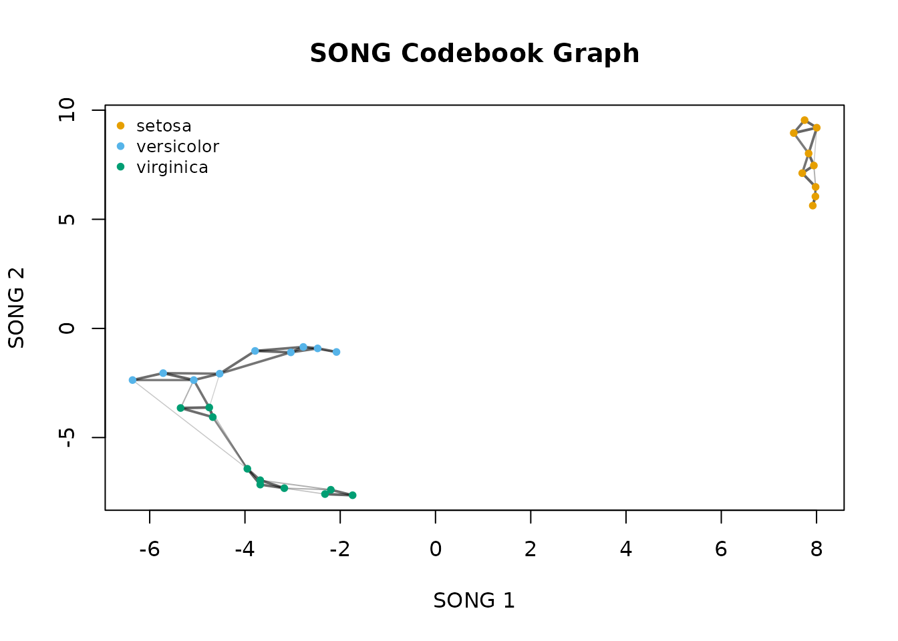

What is SONG?
The Self-Organizing Nebulous Growths (SONG) algorithm is a parametric method for non-linear dimensionality reduction. Unlike t-SNE and UMAP, SONG supports incremental visualisation: when new data arrive, training continues from the existing model instead of starting again from a new initialisation. SONG is also robust to noise and highly mixed clusters.
| Property | SONG | t-SNE | UMAP |
|---|---|---|---|
| Incremental updates | Yes | No | Limited |
| Parametric model | Yes (codebook) | No | Optional |
| Noise robustness | High | Low | Medium |
| Speed | Moderate | Slow | Fast |
| Deterministic | With seed | With seed | With seed |
The algorithm is described in:
Senanayake, D. A., Wang, W., Naik, S. H., & Halgamuge, S. (2021). Self-Organizing Nebulous Growths for Robust and Incremental Data Visualization. IEEE TNNLS, 32(10), 4588–4602.
Installation
# Install from GitHub
# install.packages("pak")
pak::pak("CTTIR/songR")Quick Start with Iris
library(songR)
model <- song(as.matrix(iris[, 1:4]), seed = 42, epochs = 20L, verbose = FALSE)
plot(model, color_by = iris$Species)
Working with the Bundled Dataset
data(songR_blobs)
model_blobs <- song(songR_blobs$data, seed = 42, epochs = 15L, verbose = FALSE)
plot(model_blobs, color_by = songR_blobs$labels)
Incremental Visualisation
This is SONG’s key feature. We train on the first half of the data, then incrementally add the second half.
# Split data
data(songR_blobs)
n <- nrow(songR_blobs$data)
idx1 <- 1:(n / 2)
idx2 <- (n / 2 + 1):n
# Train on first half
model_v1 <- song(songR_blobs$data[idx1, ], seed = 42, epochs = 15L, verbose = FALSE)
# Update with second half
model_v2 <- update(model_v1, songR_blobs$data[idx2, ], epochs = 10L, verbose = FALSE)
# The eight colors that plot() uses for eight categories (Okabe-Ito)
cluster_cols <- palette.colors(8, "Okabe-Ito")[c(2:4, 6:8, 5, 1)]
par(mfrow = c(1, 2))
plot(model_v1$embedding, pch = 16, cex = 0.5,
col = cluster_cols[as.integer(songR_blobs$labels[idx1])],
main = "Before update", xlab = "SONG 1", ylab = "SONG 2", bty = "n")
plot(model_v2$embedding, pch = 16, cex = 0.5,
col = cluster_cols[as.integer(songR_blobs$labels[idx2])],
main = "After update", xlab = "SONG 1", ylab = "SONG 2", bty = "n")
The codebook grows to accommodate the new data. Training continues
from the existing layout, so prototypes and their coordinates may move.
After an update, model_v2$embedding describes the update
batch only; use predict(model_v2, newdata = ...) to place
earlier observations in the new model revision, and
predict() with the unchanged model when coordinates must
stay frozen.
update() does not repeat the dispersion step. After a
fit with the default dispersion = TRUE, the updated layout
is therefore the raw SONG layout of the update batch: its clusters are
much tighter and on a different scale than in the dispersed layout
before the update, as the right panel shows.
Predicting New Points
# Train on 90%, predict on 10%
train_idx <- 1:135
test_idx <- 136:150
model <- song(as.matrix(iris[train_idx, 1:4]), epochs = 15L, seed = 42,
verbose = FALSE)
new_coords <- predict(model, newdata = as.matrix(iris[test_idx, 1:4]))
# Plot training and test points together
plot(model$embedding[, 1], model$embedding[, 2],
col = "gray70", pch = 16, cex = 0.6,
xlab = "SONG 1", ylab = "SONG 2", main = "Training (gray) + Predicted (red)")
points(new_coords[, 1], new_coords[, 2], col = "red", pch = 17, cex = 1.2)
Comparison: SONG vs t-SNE vs UMAP
mat <- as.matrix(iris[, 1:4])
# SONG
song_model <- song(mat, seed = 42, epochs = 20L, verbose = FALSE)
# t-SNE
tsne_result <- Rtsne::Rtsne(mat, dims = 2, perplexity = 30,
verbose = FALSE, check_duplicates = FALSE)
# UMAP
umap_result <- uwot::umap(mat, n_neighbors = 15, verbose = FALSE)
par(mfrow = c(1, 3))
# Species colors from the color-blind-safe Okabe-Ito palette
species_cols <- palette.colors(4, "Okabe-Ito")[2:4]
col <- species_cols[as.integer(iris$Species)]
plot(song_model$embedding, col = col, pch = 16, main = "SONG",
xlab = "SONG 1", ylab = "SONG 2")
legend("bottomright", legend = levels(iris$Species), col = species_cols,
pch = 16, bty = "n")
plot(tsne_result$Y, col = col, pch = 16, main = "t-SNE",
xlab = "tSNE 1", ylab = "tSNE 2")
plot(umap_result, col = col, pch = 16, main = "UMAP",
xlab = "UMAP 1", ylab = "UMAP 2")
All three methods separate the Iris species, but only SONG supports
incremental updates and retains a parametric codebook model. With the
default dispersion = TRUE, the SONG panel shows a UMAP
refinement (‘uwot’, 200 epochs) that starts from the SONG layout, so it
resembles the UMAP panel by construction;
dispersion = FALSE returns the layout of SONG alone.
Tuning Guide
| Parameter | Default | Description |
|---|---|---|
spread_factor |
0.5 | Growth threshold; higher = more coding vectors. Range: (0, 1). |
k |
3 | Neighbourhood size. Must be >= d + 1. Lower = finer
topology. |
epsilon |
0.9 | Edge decay rate (0–1). Lower = sparser, faster-pruning graph. |
epochs |
50 | Number of self-organisation iterations. More = better convergence. |
alpha |
1.0 | Initial learning rate. |
a, b
|
1.577, 0.895 | Kernel shape parameters from the UMAP literature. |
dispersion |
TRUE | UMAP refinement step for visual cluster separation. |
The Codebook Model
SONG retains a codebook of coding vectors connected by a topology-preserving graph. This is what enables incremental updates and fast projection.
model <- song(as.matrix(iris[, 1:4]), seed = 42, epochs = 15L, verbose = FALSE)
summary(model)
#> SONG model summary
#> ==================
#> Input: 150 points in 4 dimensions
#> Coding vectors: 28
#> Compression ratio: 5.4:1
#> Edges: 48
#> Mean edge strength: 0.8365
#> Output dimensionality: 2
#> Epochs: 15 (max epochs)
#>
#> Parameters:
#> k = 3 | epsilon = 0.9 | spread_factor = 0.5
#> a = 1.577 | b = 0.895 | alpha = 1
plot(model, type = "graph", color_by = iris$Species)
Interactive Comparison App
For interactive exploration, launch the Shiny comparison app:
This opens a browser-based interface to compare SONG, t-SNE, and UMAP side-by-side on your own data.
Citation
citation("songR")
#> To cite the songR R package, use:
#>
#> R. Heller (2026). songR: Self-Organizing Nebulous Growths for
#> Dimensionality Reduction. R package version 1.0.0.
#> https://github.com/CTTIR/songR
#>
#> To cite the underlying SONG algorithm, use:
#>
#> Senanayake, D. A., Wang, W., Naik, S. H., & Halgamuge, S. (2021).
#> Self-Organizing Nebulous Growths for Robust and Incremental Data
#> Visualization. IEEE Transactions on Neural Networks and Learning
#> Systems, 32(10), 4588-4602. doi:10.1109/TNNLS.2020.3023941
#>
#> To see these entries in BibTeX format, use 'print(<citation>,
#> bibtex=TRUE)', 'toBibtex(.)', or set
#> 'options(citation.bibtex.max=999)'.